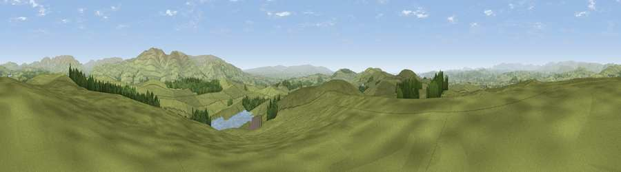

High Fell
#7257 in England · top 26% of its area beats it · near Old TownThe view, rendered

A 360° render of this exact spot computed from the terrain model, tree cover and land cover — summer colours, afternoon light, calibrated against photographs of famous viewpoints. Real trees, hedges and buildings will differ in detail.
The panorama
Grey silhouette: terrain skyline in each direction (720 bearings, Earth curvature and refraction included). Dashed green: skyline with trees (+15 m) and buildings (+8 m) as obstacles. Blue strip: how far the ground is visible on each bearing.
Where the view opens
Wedge length = distance to the farthest visible ground on that bearing (vegetation-aware). Rings at 10, 25 and 50 km.
What fills the view
88% grassland · 9% woodland · 2% water
Angular shares of the visible panorama (visual magnitude), not map area. Landscape diversity 0.19 (0–1 Shannon).
Key numbers
More beautiful places nearby
The staircase of upgrades: each row has a higher view potential than everything closer. Driving times are estimates from straight-line distance, calibrated against real road routing — check an actual route before setting out.
| Place | Direction | Drive | Score |
|---|---|---|---|
| Warth Hill | SW · 2 km | ~6 min | 73.6 |
| Viewpoint near Lupton | SW · 4 km | ~9 min | 75.1 |
| Scout Hill | SSW · 4 km | ~9 min | 76.5 |
| Viewpoint near Middleton | E · 7 km | ~14 min | 78.2 |
| Viewpoint near Lupton | SW · 7 km | ~15 min | 78.7 |
| Calf Top | E · 8 km | ~16 min | 79.8 |
| Crag Hill | ESE · 11 km | ~21 min | 80.0 |
| Viewpoint near Arnside | WSW · 16 km | ~28 min | 80.7 |
54.26513, -2.63760 · source: osm peak · position refined by local search. Computed location — check access rights before visiting.